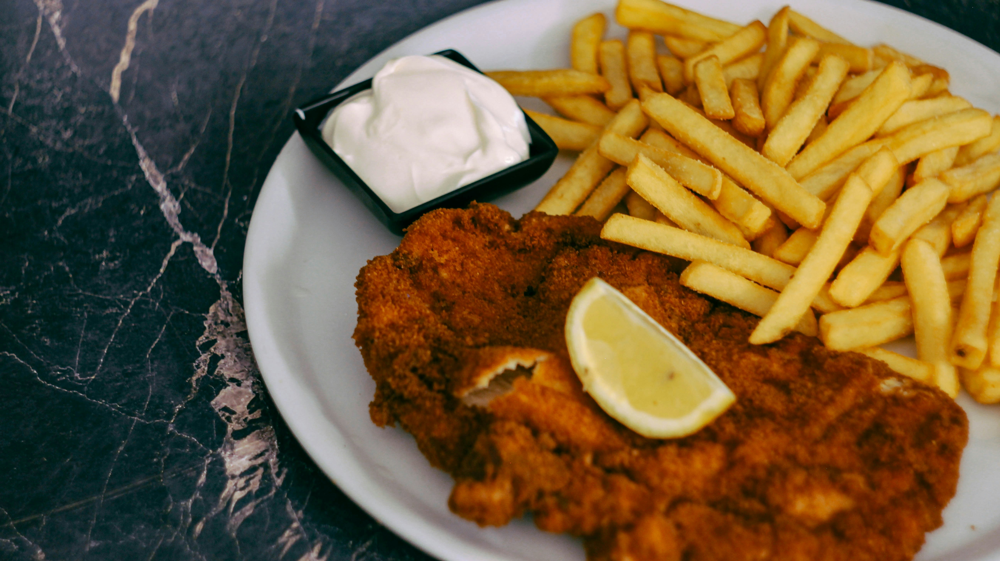

Home
Chicken-schnitzel

Delicious chicken-schnitzel to go with your favourite fillings!
In this recipe we'll be making delicious chicken schnitzels
in traditional German style!
Ingredients:
- 480 grams of thin chicken fillet cutlet
- salt & pepper
- 1 dl of wheat flour
- 2 eggs
- 2 dl of panko flour or breadcrumbs
Steps:
- Place the steaks between two baking sheets or cling film
and gently beat them into thin steaks (about 5 mm).
- Season the cutlets on both sides with salt and pepper.
- Measure the wheat flour on a deep plate.
Break the egg on another plate,
break the structure with a fork.
Measure the panko flour on the third plate.
- Turn the steaks first in wheat flour,
then in egg, and finally in panko flour.
Pat the baking on the cut and dry for a while.
- Fry the steaks in a generous amount of oil over medium heat
until golden brown and crispy
(about 3 minutes per side). Turn the steaks halfway
through the frying.
- Serve with yogurt sauce, lemon slices and capers.